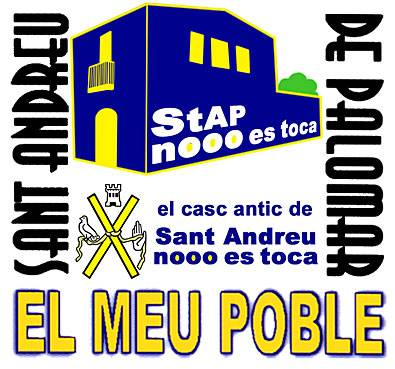
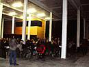
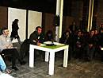

qui és que us ha demanat que ho remenéssiu tot ?
...au va, home! potiners centralistes no ens busqueu les pessigolles !
Sant Andreu de Palomar nooo es toca !!!!
salvem el Casc Antic del potineig de BCN
25 de gener 2012 :
1
a.
assemblea general
a la Fabra i Coats



...què s'han cregut?
volen potinejar-nos el nostre poble com si fos propietat seva
model d'al·legació col·lectiva solidària
(PDF)
pàgina d'inici
pàgina d'imatges
signatures electròniques
zona afectada
afectacions
Tornar